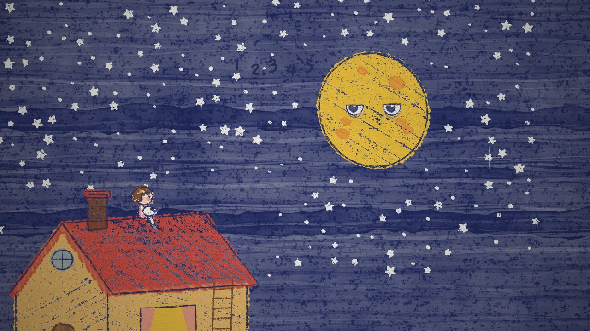
Crayon Picture Book
蜡笔儿童绘本
for The Moon Can't Sleep
The moon can't sleep, so a little girl climbs onto the roof to sing it a lullaby.
月亮失眠了，小女孩爬上屋顶给它唱摇篮曲。
- Picture books
- Bedtime stories
- Kids' learning
LemoLab × Claude Opus 5.5 present
The Nominees for Best Style · 2026
Every style is a reusable prompt, and a short film directed, drawn and scored entirely in code.
每个风格是一份可复用的提示词，外加一支完全用代码导演、作画、配乐的短片。
Get the styles on GitHubFeature Presentation特别放映
98 Years of Best Picture · 1927 – 2025
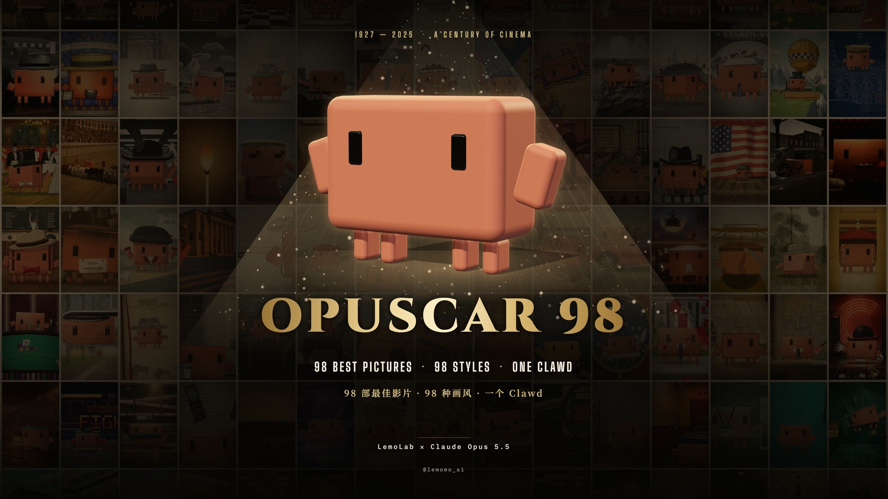
One Clawd walks through all 98 Best Picture winners, each one redrawn in a style that fits the film. Every frame, every note and every cut was written in code by Claude Opus 5.5.
一个 Clawd 走过 98 部最佳影片，每一部都换成贴合那部电影的画风。每一帧画面、每一个音符、每一刀剪辑，都是 Claude Opus 5.5 写代码做出来的。
Category 01
手绘与绘画 · 11 nominees

蜡笔儿童绘本
for The Moon Can't Sleep
The moon can't sleep, so a little girl climbs onto the roof to sing it a lullaby.
月亮失眠了，小女孩爬上屋顶给它唱摇篮曲。
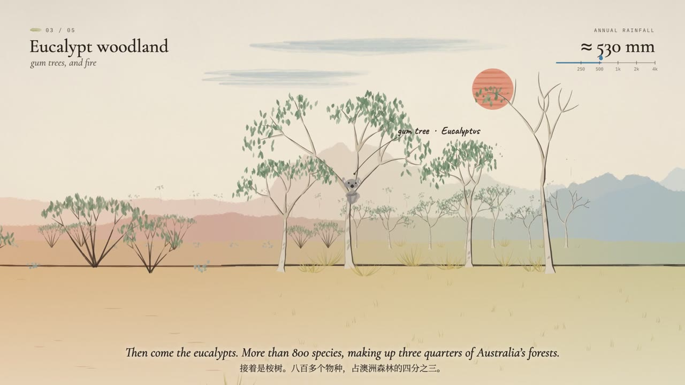
水彩笔刷
for Follow the Rain
Follow the rain from Australia's red desert heart to its green coast in one unbroken painted walk.
跟着降雨从澳洲红色腹地一路画到绿色海岸，一镜到底。
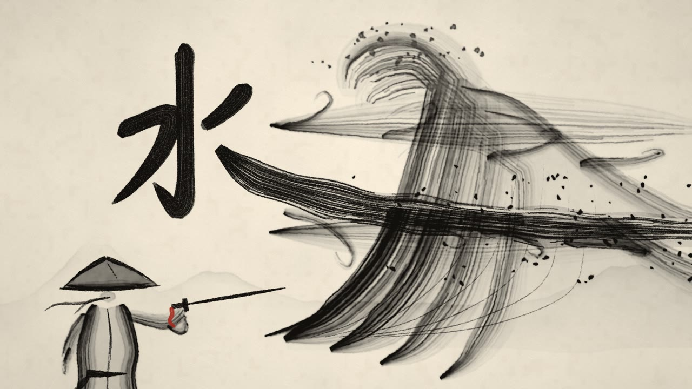
中国水墨
for The Swordsman and the River
A swordsman crosses the river on the water and splits the current with a single stroke.
侠客踏水过江，一剑断流。
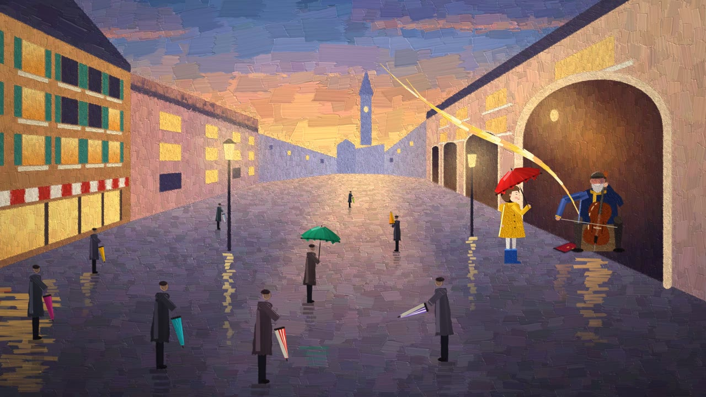
油画厚涂
for The Colour of Rain
In a grey, rainy square one red umbrella opens, and a waltz paints the whole plaza in colour.
灰色雨中广场，第一把红伞撑开，圆舞曲把整个广场刷上颜色。
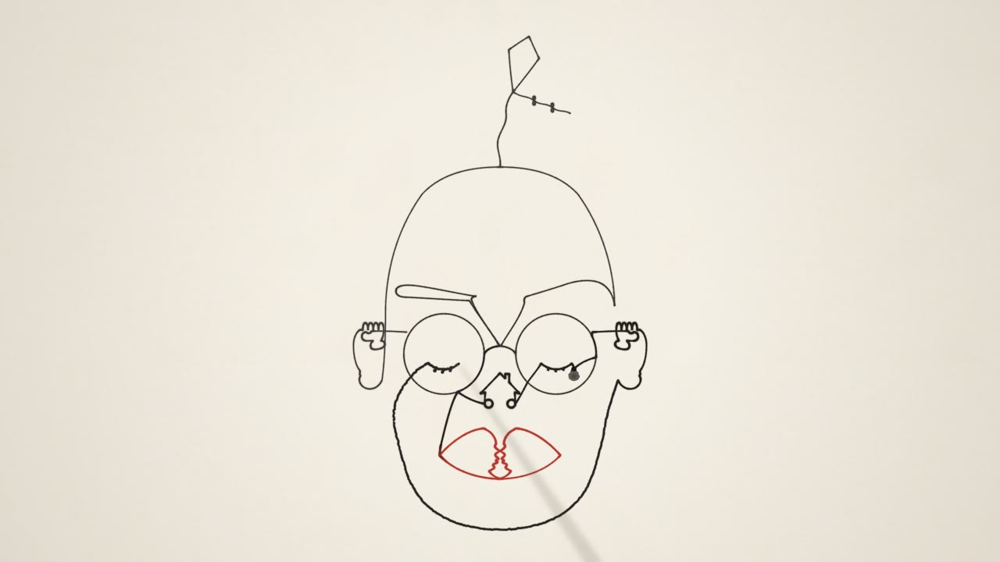
一笔画
for The Line That Never Lifted
One unbroken line draws a whole life, then the pen passes to a child.
一根不离纸的线画完一个人的一生，再把笔交给孩子。
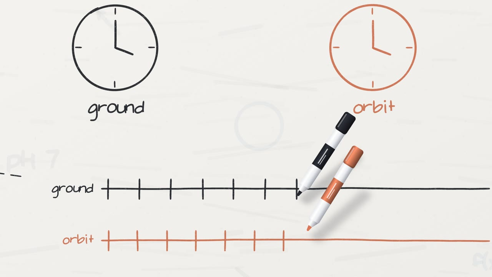
白板讲解
for Einstein in Your Pocket
How your phone knows where you are: GPS, atomic clocks, and the 38 microseconds relativity adds every day.
手机怎么知道你在哪：GPS、原子钟，和相对论每天多出的 38 微秒。
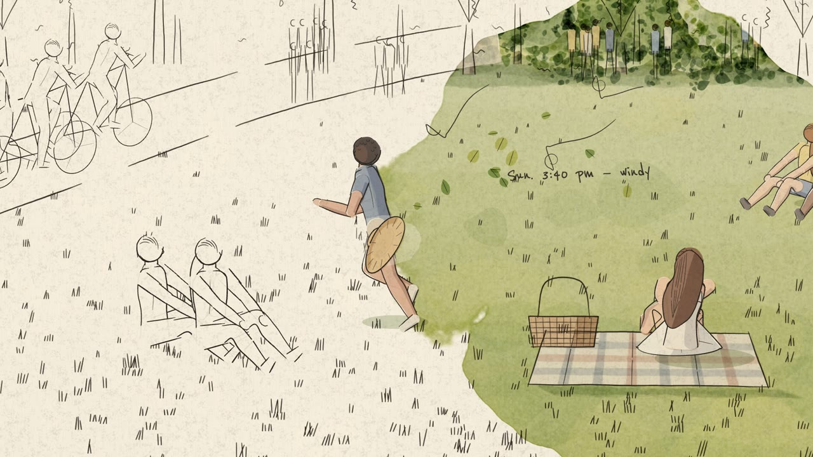
钢笔淡彩
for Where the Wind Went
A park that is only a pen sketch; wherever the wind carries her straw hat, colour follows.
公园只是一张钢笔速写，风把草帽吹到哪里，哪里才有颜色。
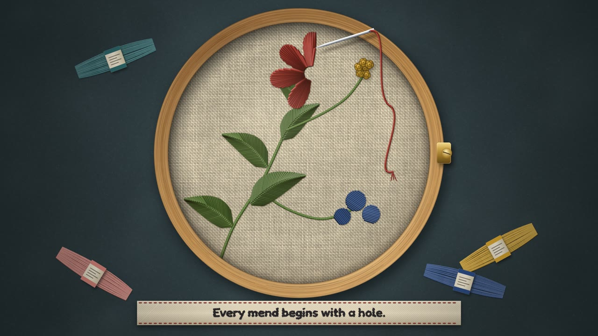
刺绣与针织
for Every Mend Begins with a Hole
A worn knit elbow is darned, a flower grows stitch by stitch over the darn, and the mended sleeve walks out the door.
针织袖肘磨出一个洞，先织补，再一针一针在上面绣出一朵花，补好的袖子走出了门。
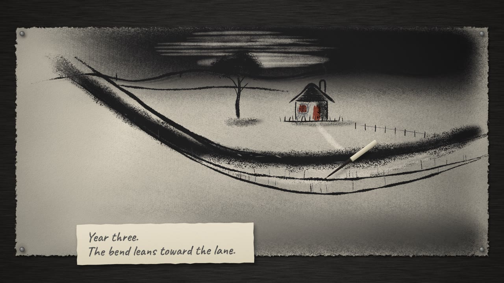
木炭素描动画
for The Bend
One pinned sheet keeps nine years of a river: each spring the bank is rubbed out and redrawn nearer the house, the ghosts stay, and the red door is finally moved uphill.
同一张图钉固定的纸记下一条河的九年：每年春天河岸被擦掉、重画得离房子更近，旧岸的幽灵留在纸上，最后那扇红门被搬到了山坡上。
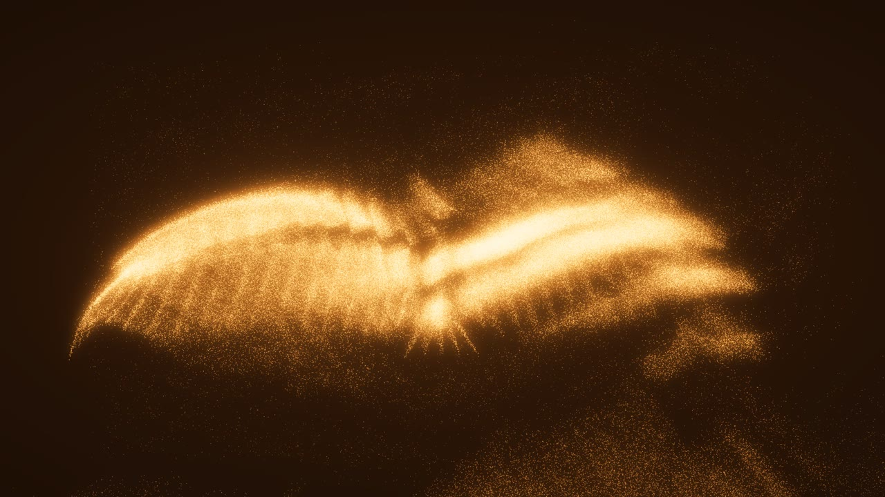
沙画
for Where the Sparrow Went
A stream of sand builds a heap that rises into a tree, flies off as a bird, breaks as a wave, stands as a lighthouse and falls back into a heap that spells home, with no cut.
一道沙流堆成沙丘，沙丘长成大树，大树化作飞鸟，飞鸟翻成海浪，海浪立成灯塔，最后落回沙丘，拼出一个“home”，全程没有一次剪切。
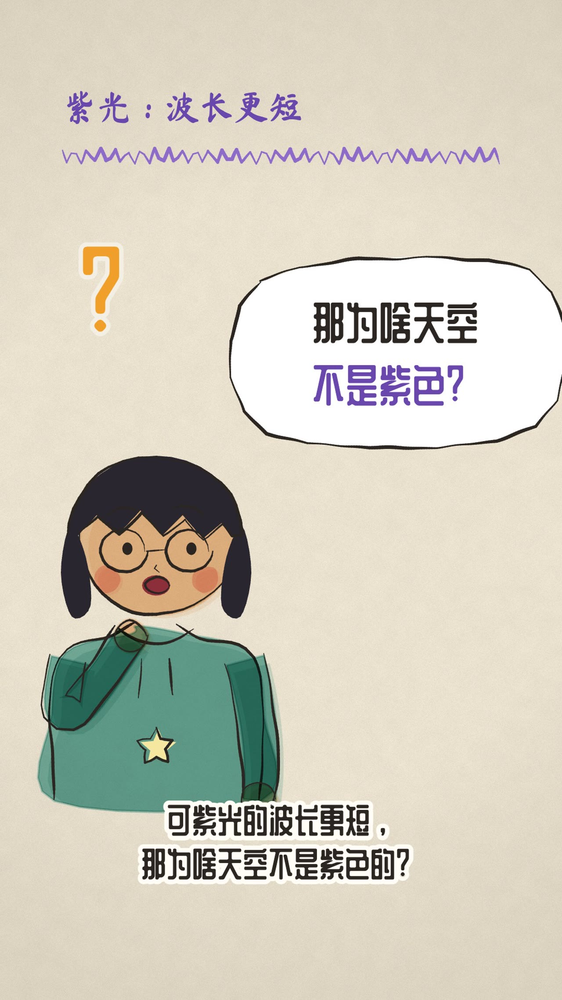
手绘科普体
for Why Is the Sky Blue?
A pen-and-wash cartoon explainer: a bob-haired kid with round glasses asks why the sky is blue, then draws the answer page by page: a sun, a seven-colour beam, smiling air molecules that knock blue light about while red goes straight through, a question bubble, three hand-drawn charts and a sunset, all lettered in a thick-outlined hand with paper-coloured brush wipes between pages.
一部钢笔淡彩的卡通科普片：戴圆眼镜的齐刘海小孩问天空为什么是蓝的，然后一页页画出答案：太阳、七色光束、会笑的空气分子把蓝光撞得到处跑而红光直穿而过、一个提问气泡、三张手绘图表和一场日落；字是描白边的粗手写体，页与页之间用纸色笔刷横扫翻篇。
Category 02
东方传统 · 8 nominees
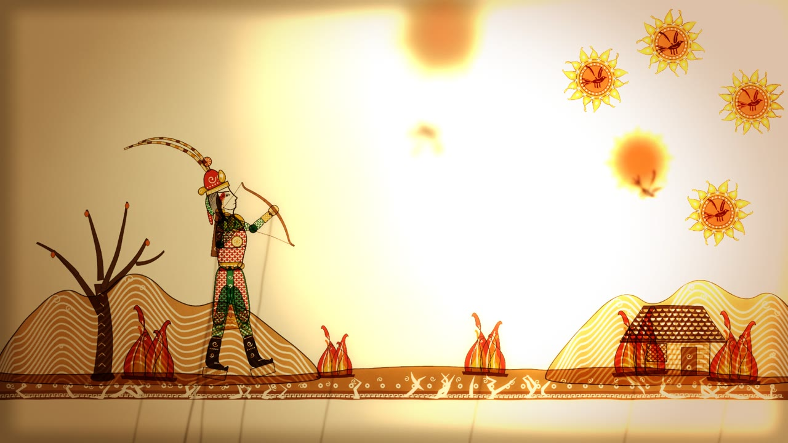
皮影戏
for Hou Yi Shoots the Suns
Ten suns scorch the earth until the archer Hou Yi draws his bow, told with leather puppets on a lit screen.
十日炙烤大地，后羿张弓射日。
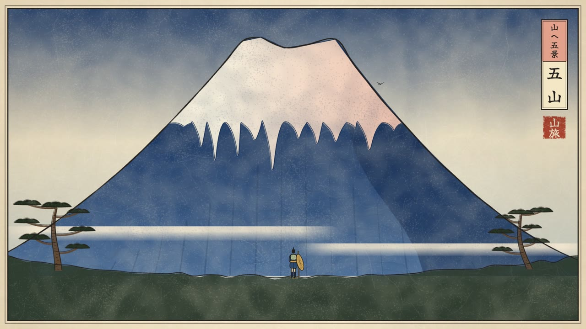
浮世绘
for A Journey Toward the Mountain
A traveller walks toward a distant mountain; every shot is a woodblock print, ending in a great wave.
旅人走向远山，每个镜头都是一幅版画，最后迎来一道巨浪。
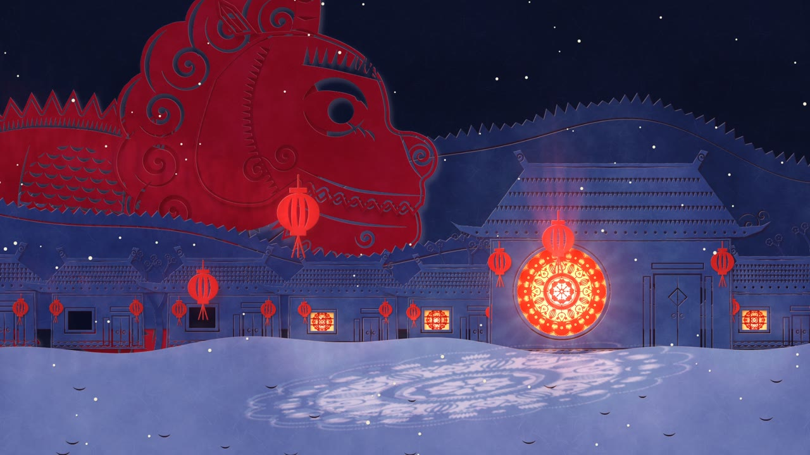
红色窗花剪纸
for Nian Comes to Town
On New Year's Eve the beast Nian comes to town, and one girl's giant paper-cut lights up the village to scare it off.
除夕年兽进村，小女孩剪出的大窗花照亮全村，把它吓跑。
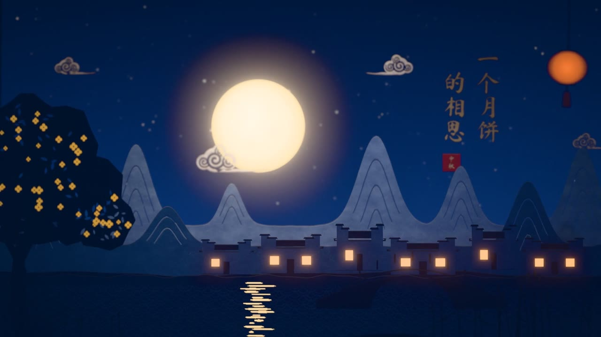
纸雕灯影
for A Mooncake's Longing
A single mooncake tells the Mid-Autumn story of reunion and longing inside a glowing paper-cut lightbox.
一枚月饼讲中秋的团圆与思念，纸雕灯箱层层透光。
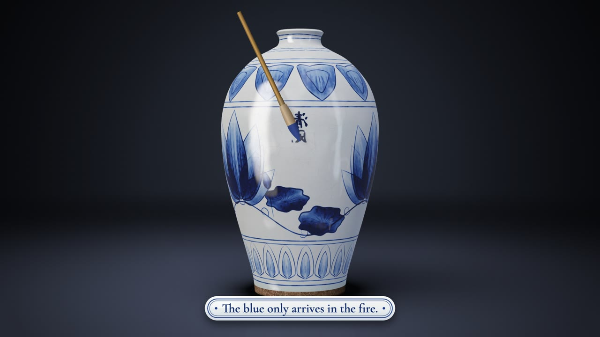
青花瓷
for The Blue Only Arrives in the Fire
A brush paints a river round a turning vase, the camera falls through its rim into the painted landscape, and the kiln turns grey strokes to blue.
一支笔在转动的瓷瓶上画出一条河，镜头从瓶口落进画里的山水，入窑一烧，灰色笔痕变成青蓝。
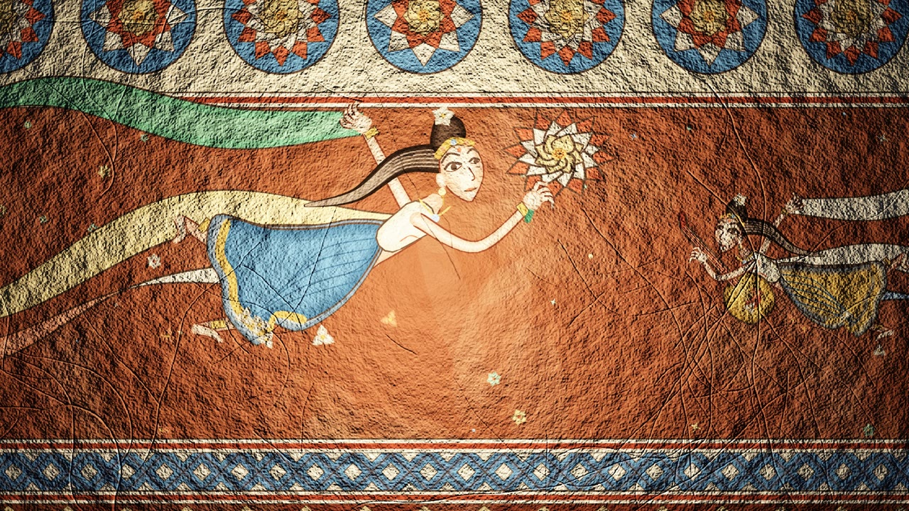
敦煌壁画
for Borrowed Lamplight
A borrowed oil lamp walks along a cave wall; every register it passes wakes from weathered plaster to its first colour, and when the flame sinks the wall remembers.
借来的一盏油灯沿着洞窟墙壁走过，灯光所到之处，褪色的壁画一层层醒回最初的颜色；火苗落下时，墙还记得。
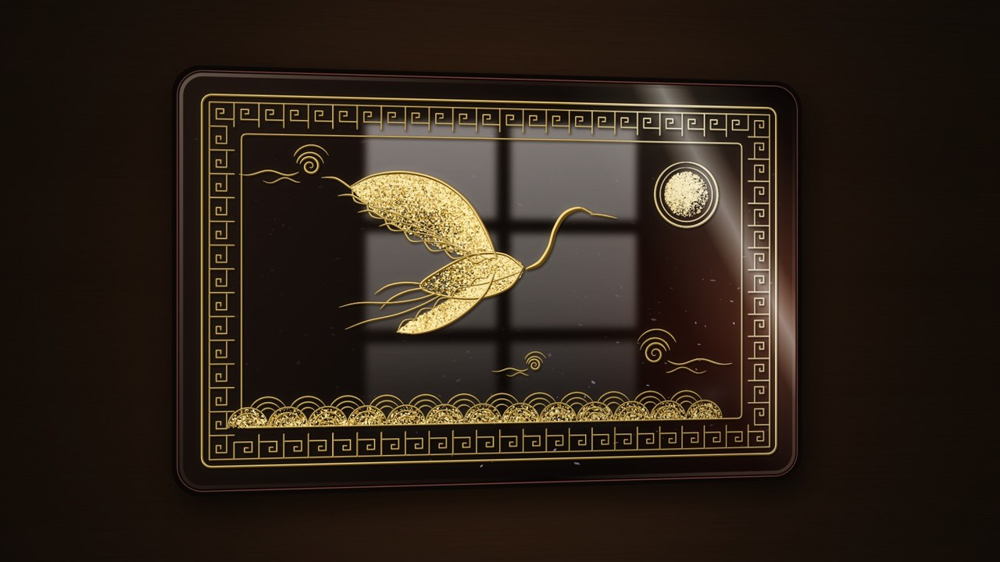
漆器描金
for Thirty Coats
A lid takes thirty coats of lacquer, each cured in damp air and polished, before the first gold line is drawn; then it turns in the light, opens, and shows the red that was under everything.
一只漆盒盖上了三十道漆，每一道都要在潮气里阴干、打磨；直到最后才落下第一笔描金，盒盖在光里转动、掀开，里面是一直垫在底下的朱红。
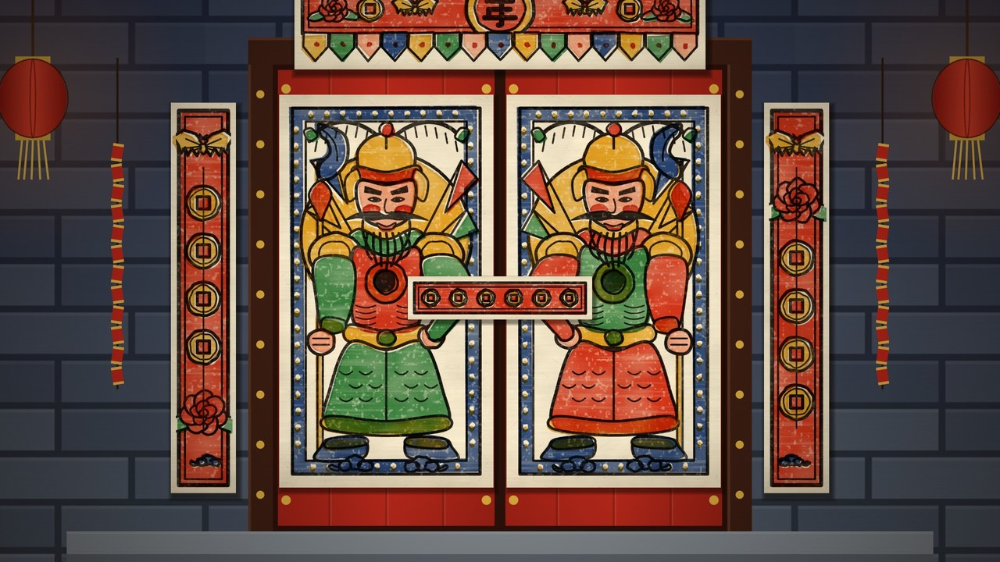
木版年画
for Five Blocks to a Door
A carved plank prints a child with a carp and a lotus, one colour block at a time; pasted on a door with a mirrored guardian pair, the old year tears when the door opens, and the plank stays on the bench.
一块雕好的木板印出抱鲤鱼、举莲花的娃娃，一版一色叠印而成；贴上大门配成对称的门神，门一开旧年的纸被撕开，留下的是工作台上的那块板。
Category 03
印刷与版画 · 9 nominees
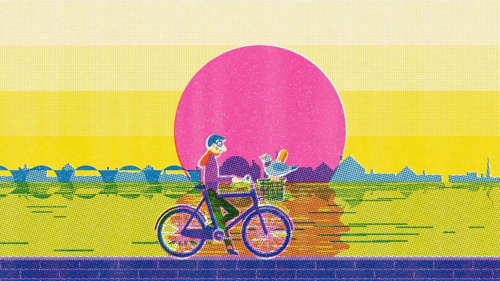
Risograph 丝网印刷
for Sunday Ride
A Sunday-morning bike ride through the city — bakery, park, riverside — in two misregistered inks.
周日早晨骑车穿过城市：面包店、公园、河边。
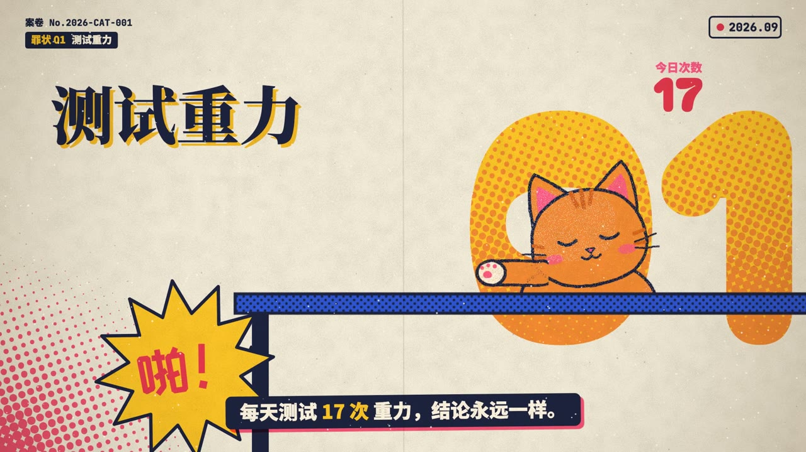
复古半调案卷
for Case File: Chubby
A chubby orange cat stands trial for testing gravity and 4 a.m. parkour, and walks free.
橘猫胖橘被立案审查：测试重力、凌晨跑酷，最后无罪释放。
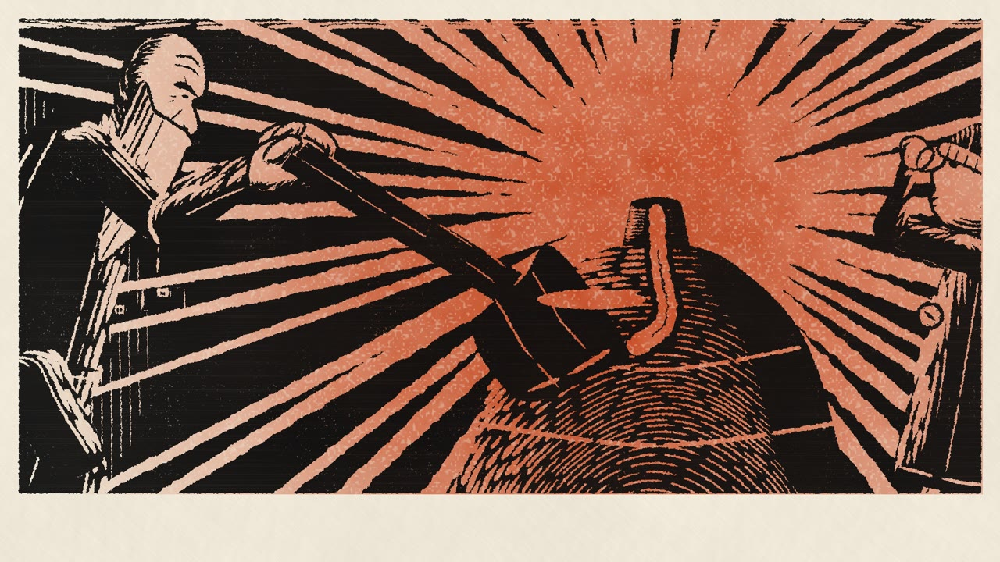
木刻版画
for The Bell Founder
A village spends a whole winter casting one bell; the first time it rings, the snow stops.
村子用一整个冬天铸一口钟，钟声第一次响起，雪停了。
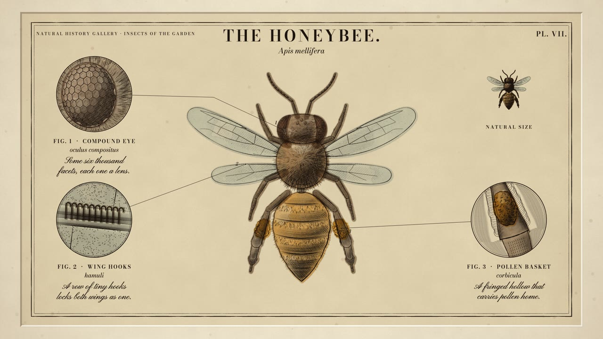
铜版画
for The Honeybee, Plate VII
A natural-history plate engraves itself: the burin cuts the copper, the bee builds up line by line, and a watercolour wash brings it to life.
一张博物志图版自己刻出来：雕刀推开铜版，蜜蜂一线线成形，最后手工水彩上色。
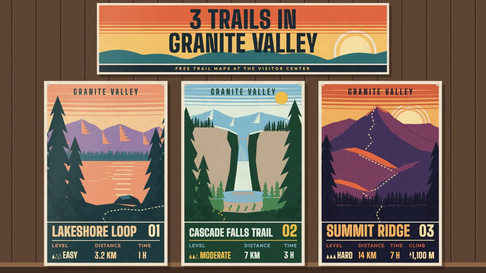
丝印旅行海报
for Three Trails
Three trail posters are screen-printed one ink at a time, then climbed in one long take from noon to dusk.
三条步道各一张丝印海报，一色一刮印出来，再沿山脊一镜到底从正午爬到黄昏。
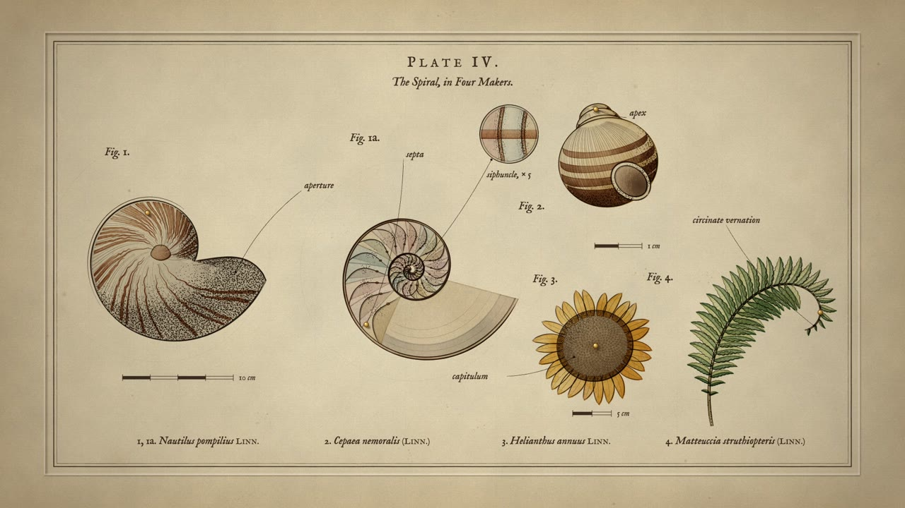
博物图鉴
for Plate IV: The Spiral, in Four Makers
A blank sheet fills with a hand-coloured plate: a chambered shell is drawn, halved and magnified, then a snail, a sunflower head and a fern crozier join it, each pinned, until the page curls away.
一张空白图版被一笔笔画满：鹦鹉螺先被画出、剖开、放大，随后蜗牛、向日葵花盘和蕨类拳卷幼叶依次画好并钉住，最后整页被翻走。
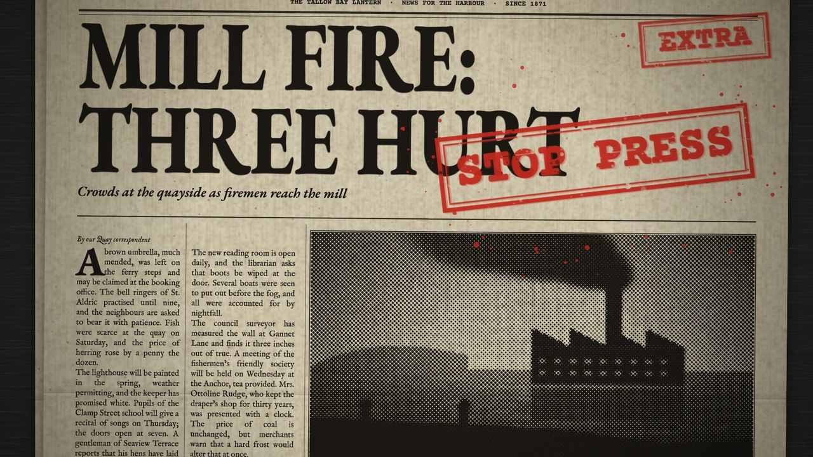
活字报纸头版
for Print It True
A small-town paper prints a fire that never happened; a stop-press stamp pulls the headline out letter by letter, the halftone photograph re-develops, and the correction is set as large as the mistake.
小镇报纸头版登出一场并不存在的火灾；“停机”印章一盖，标题活字被逐个抽出，网点照片重新显影，更正启事排得和错误标题一样大。
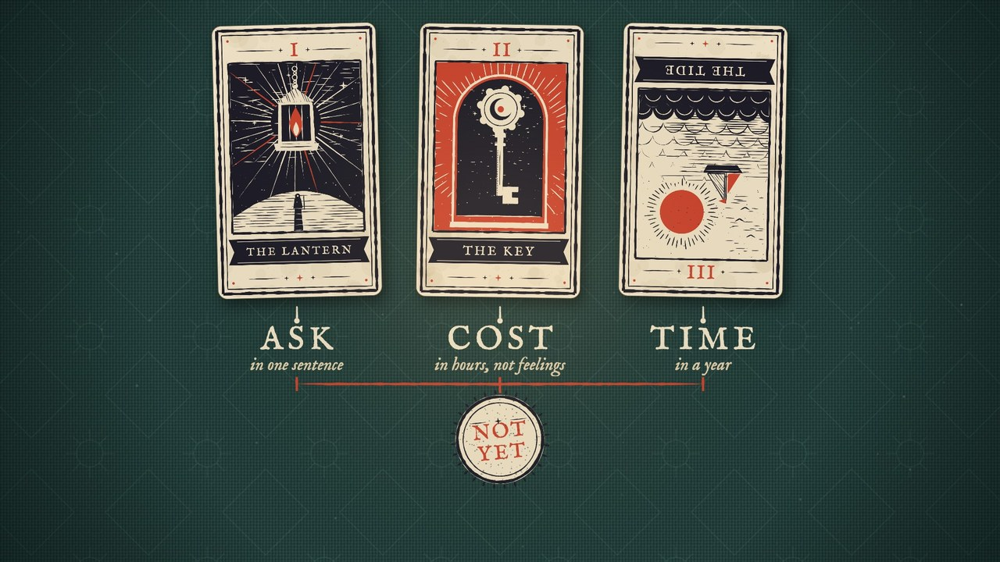
塔罗牌
for Three Cards for a Yes
A favour is asked and yes is already forming; a shuffled deck deals three cards, a Lantern for what is asked, a Key for what it costs, a Tide for whether it matters in a year, and the last one lands upside down: not yet.
有人请你帮个忙，“好”字已到嘴边；洗牌、切牌、发三张：灯笼问到底要你做什么，钥匙问代价是什么，潮汐问一年后还重要吗，最后一张倒位落下：先不急着答应。
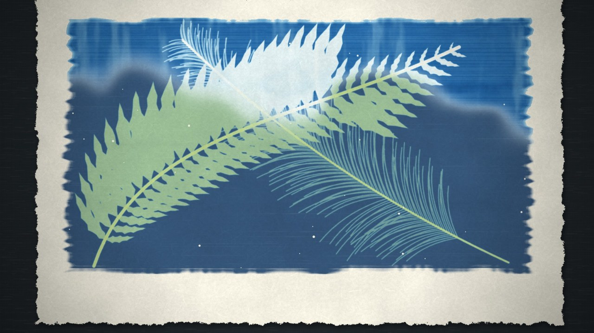
蓝晒
for Reading the Sun
A strip of sun-sensitive paper is uncovered one band at a time, the wash shows which exposure keeps its whites, and a fern and a feather are printed with exactly that much sun.
一条涂了感光液的纸条被一段一段揭开，水洗后只有一段留住了白；蕨叶和羽毛就按那一段的曝光时间印出来。
Category 04
图形与排版 · 16 nominees
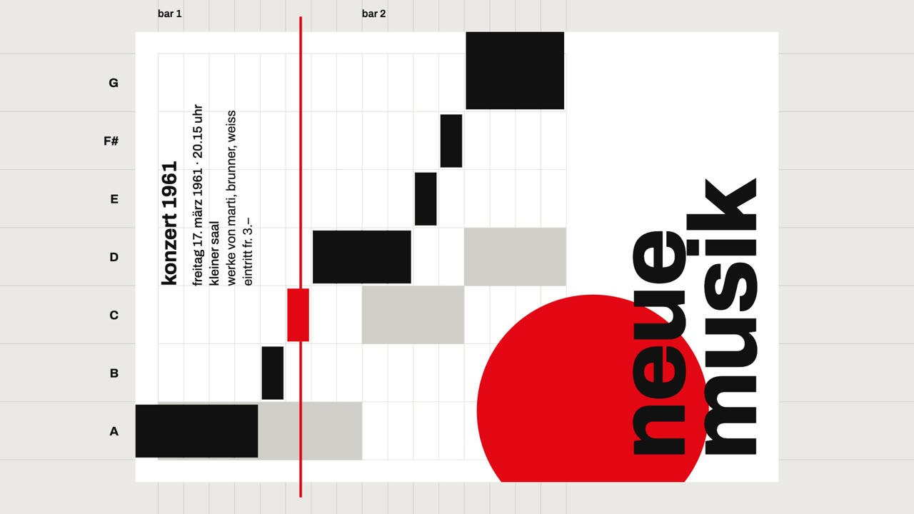
瑞士动态排版
for Five Rules for a Poster
A concert poster lays itself out by five Swiss design rules; the fifth is to break just one.
一张音乐会海报按瑞士设计的五条规则自己排版，第五条是只打破一条。
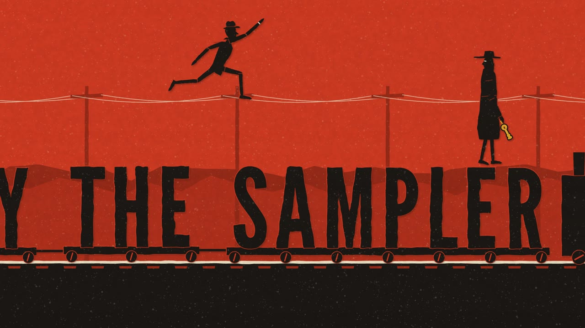
60s 间谍片头
for The Velvet Cipher
Opening titles for an imaginary 1964 spy film: a chase for a stolen key until the shapes lock into the title.
虚构 1964 年间谍片的片头：追一把被偷的钥匙，几何碎片最后拼成片名。
装饰艺术
for Midnight at the Starlight Hotel
A grand hotel, 1930: a bellboy races lifts and revolving doors to deliver one letter before midnight.
1930 年的大饭店，门童赶在午夜前把一封信送上顶楼。
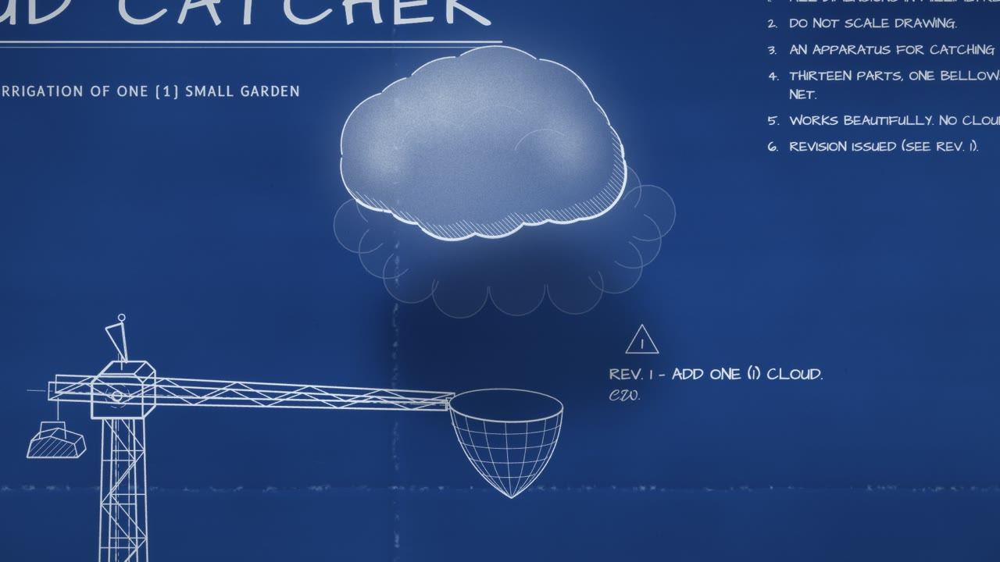
蓝图 / 工程制图
for Patent Pending: The Cloud Catcher
An inventor's blueprint draws, explodes and assembles a cloud-catching machine, and its revision cloud starts to rain.
发明家的蓝图自己画出一台接云机器，修订云线变成了真的雨云。
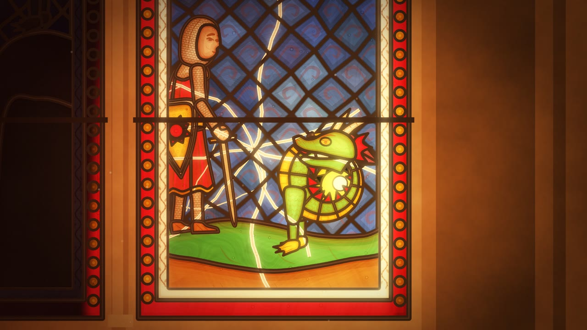
彩色玻璃窗
for The Dragon of the East Window
Sunlight crosses a cathedral window from dawn to dusk, waking each pane of a knight-and-dragon tale.
阳光从清晨移到黄昏，照到哪一格花窗，哪一格的故事就动起来。
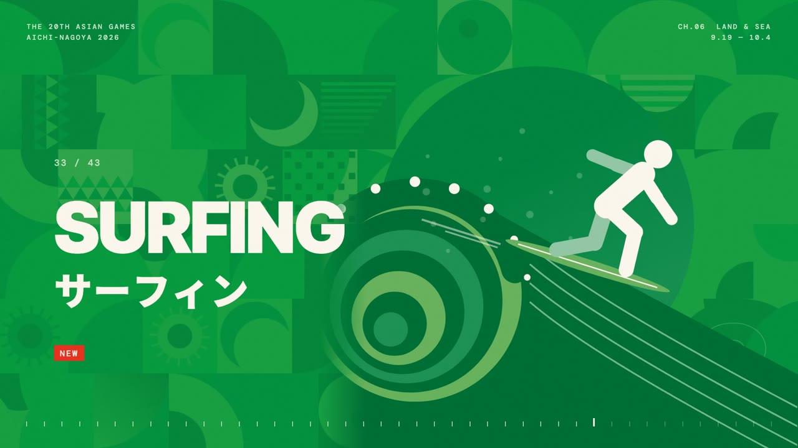
象形运动图形
for Aichi-Nagoya 2026 — All 43 Sports
All 43 sports of the 2026 Asian Games as beat-locked geometric pictograms.
2026 亚运会 43 个大项，几何象形人卡着节拍快闪。
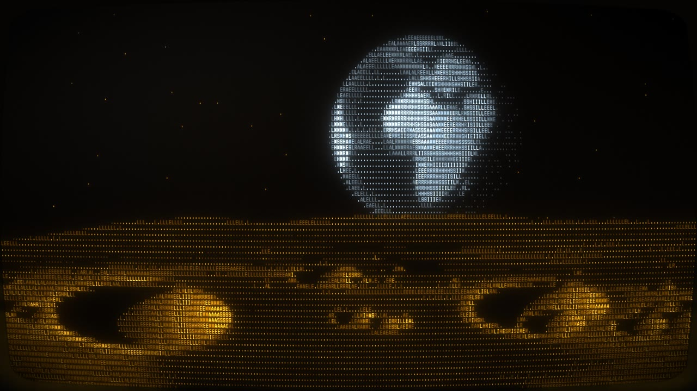
ASCII / CRT 终端
for Tranquility.log
A moon-base AI wakes after forty years to a signal from Earth, and replies by drawing “home” in characters.
月球基地的 AI 沉睡 40 年后被唤醒，用字符画出“家”来回复。
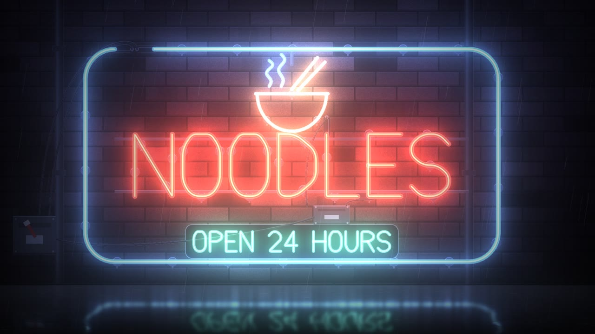
霓虹灯牌
for The Last Bowl on Pell Street
A noodle bar's neon sign is lit tube by tube at dusk, loses one stroke of a letter in the small hours, and is switched off to grey glass at dawn.
一家面馆的霓虹灯牌被一根根点亮，后半夜一个字母的笔画永远熄了，天亮时被一只手拉闸，只剩灰色的玻璃管。
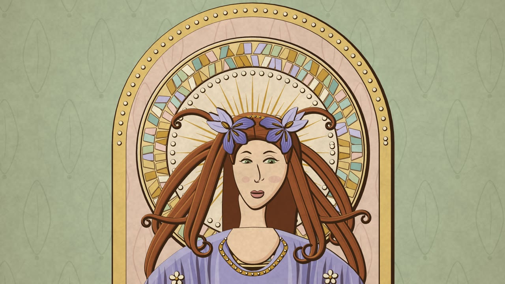
新艺术
for The Iris Hour
A single gilded line becomes a vine that carries us past three arched windows, from a frosted bud to an iris in bloom, and the title is lettered out of its stem.
一根鎏金的线变成藤蔓，带我们穿过三扇拱窗，从结霜的花苞走到盛开的鸢尾，片名就从花茎里写出来。
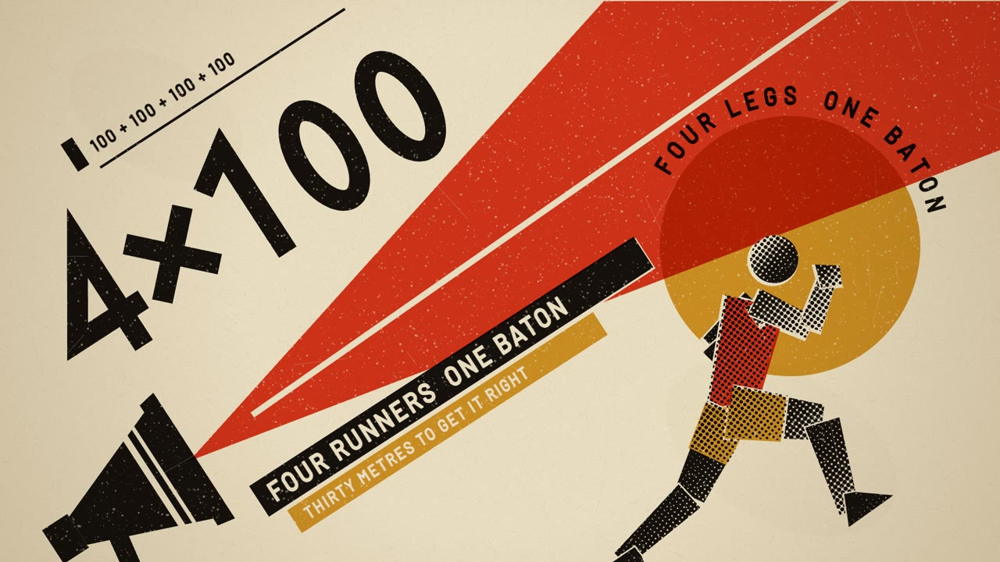
包豪斯构成主义
for Thirty Metres
A relay poster builds itself block by block on a steep diagonal, and the whole film narrows to the one place a race is won: the thirty-metre box where the baton changes hands.
一张接力赛海报沿陡峭的对角线一块一块搭起来，整部片子收窄到决定胜负的那 30 米交接区：接力棒在这里换手。
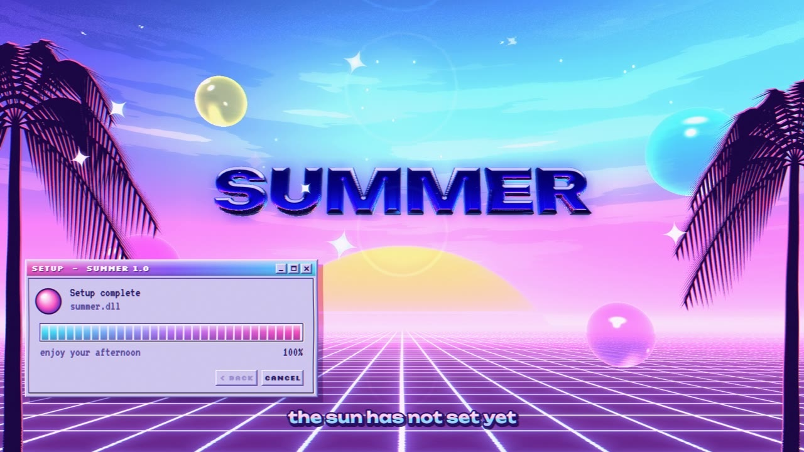
蒸汽波与 Y2K
for Installing Summer
A setup wizard installs one summer: the bar crawls under a sinking banded sun, hangs at 99 % in silence, then completes in spinning chrome type before the last dialog is dismissed.
一个安装向导在安装一个夏天：进度条在沉落的条纹夕阳下爬行，静默中卡在 99%，然后以旋转的铬金属字完成，最后点掉最后一个对话框。
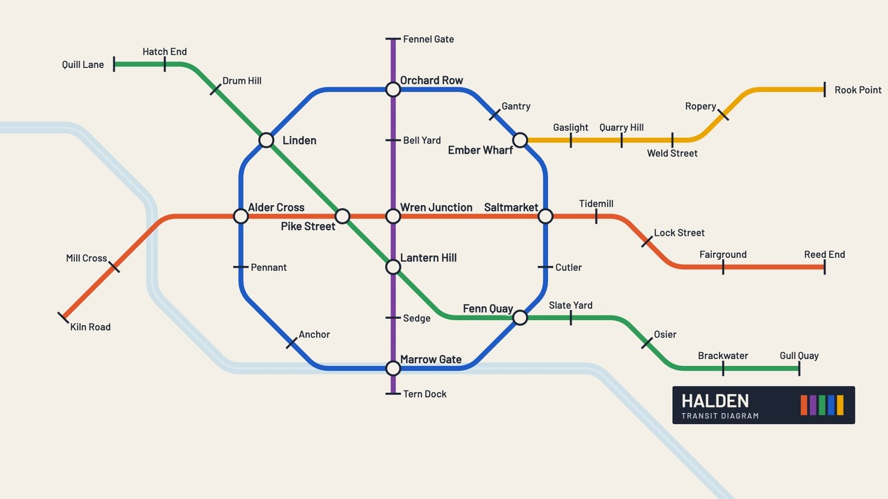
地铁线路图
for Three Angles to Anywhere
A traveller lost in the curved tangle of an invented city watches its map straighten onto three angles, learns the rules from the legend, and rides two changes to a lantern festival.
一位旅客迷失在虚构城市弯曲的线路里；地图在眼前被拉直到三种角度，图例讲完规则，他换乘两次，抵达灯笼节。
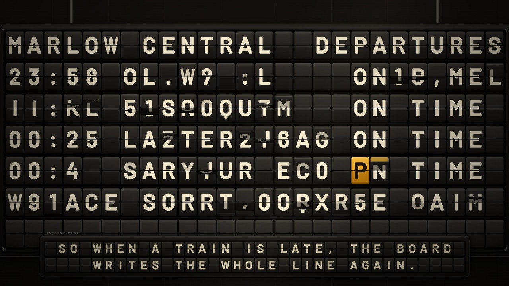
翻牌显示屏
for The Long Way Round
A night-station departure board can only turn forward: going back from B to A costs thirty-nine flaps, so a delay rewrites a whole line, a countdown ticks on a ten-flap wheel, and a last sentence is spelled cell by cell.
夜间车站的翻牌显示屏只能向前翻：从 B 退回 A 要翻三十九张牌，所以一次晚点会让整行重写，倒计时在十张牌的数字轮上跳动，最后一句话一格一格拼出来。
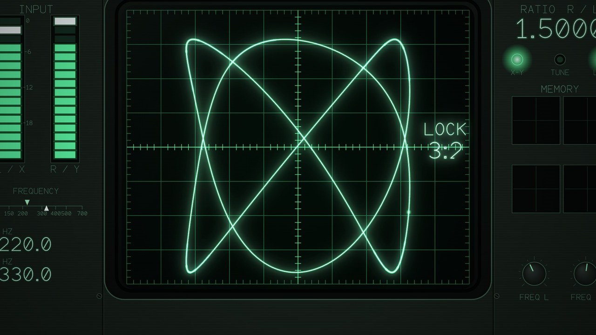
矢量示波器
for Hold the Fifth
Two tones drift toward a simple ratio until the picture they draw stands still; then the score itself writes a word on the glass.
两个音渐渐靠近一个简单的比例，它们画出的图形终于静止；最后由配乐本身在荧光屏上写出一个词。
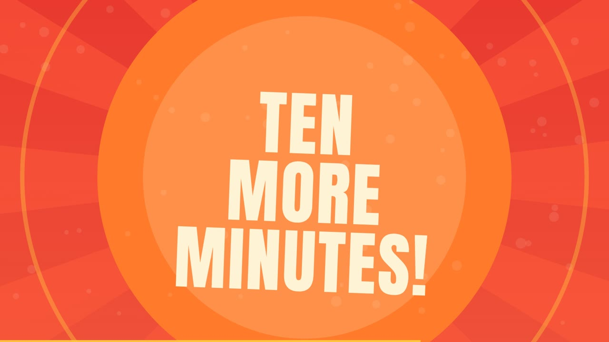
歌词视频
for Ten More Minutes
A sleeper bargains with his alarm for ten more minutes: a spoken-word track whose words land on a 100 BPM grid, one clock-moon-sun disc pulsing with the kick, a hook that grows from a whisper to a full-frame shout across the night, sunrise and red choruses, and a last bar where it shrinks to ten more seconds.
一个人跟闹钟讨价还价「再睡十分钟」：念白节奏的曲子，每个词落在 100 BPM 的拍点上，一个随底鼓跳动的钟面（月亮、太阳）当背景，副歌的钩子句从小声一路放大到满屏，最后一小节又缩成「再睡十秒」。
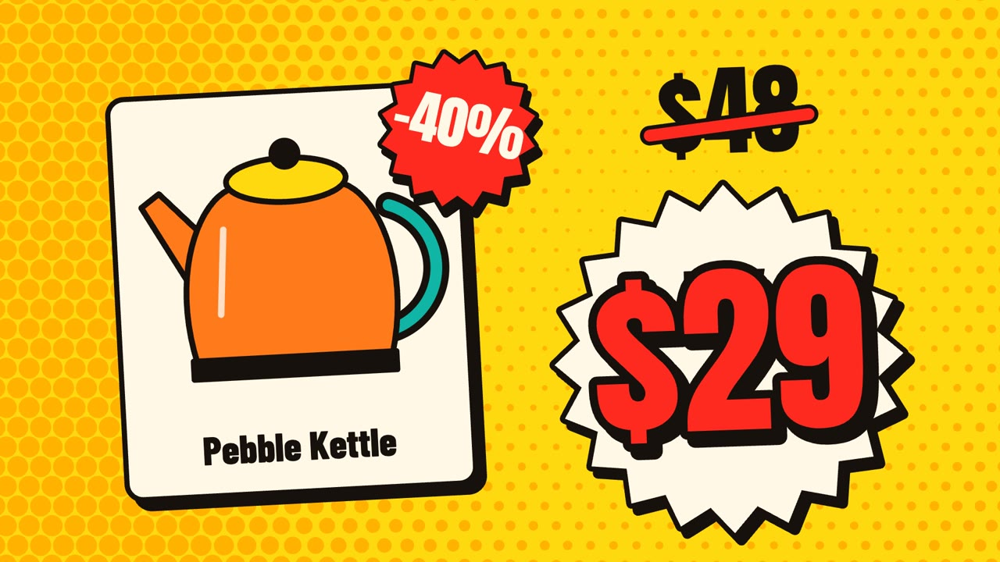
闪购促销
for Mango Lane: Mega Markdown
An invented shop's weekend of markdowns told as the sum you save: starbursts and struck-through prices slam in on the beat, a stock bar drains, a coupon tears at its perforation, a receipt adds up to $134 saved, and a countdown breaks on one beat of silence into a pressed button.
一家虚构小店的周末大促，讲成「你省了多少」：星爆和划掉的旧价踩着鼓点砸进来，库存条一格格掉光，优惠券沿齿孔撕开，小票算出省下 134 美元，倒计时在一拍静默后炸开，最后按下按钮。
Category 05
信息与发布 · 14 nominees
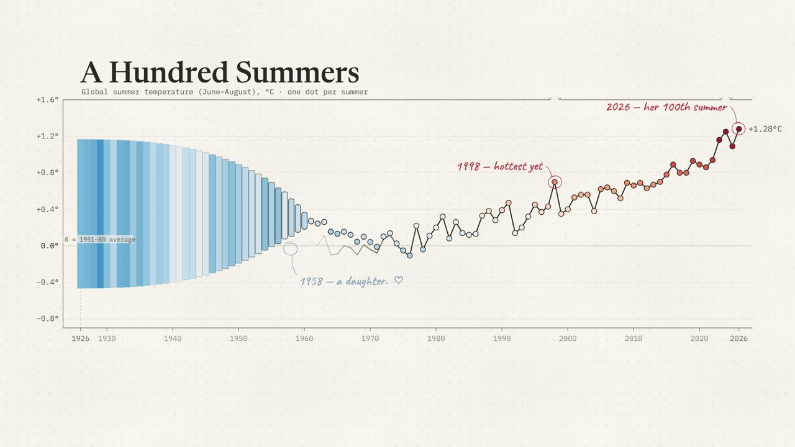
数据叙事
for A Hundred Summers
A hundred years of summer temperatures, where the chart itself tells the story.
一百年的夏季气温，图表本身就是故事。
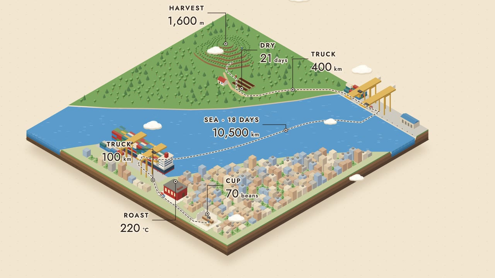
等距信息图
for From Bean to Cup
A coffee's journey from the plantation to your hands, across one isometric world.
一杯咖啡从种植园到你手里的旅程。
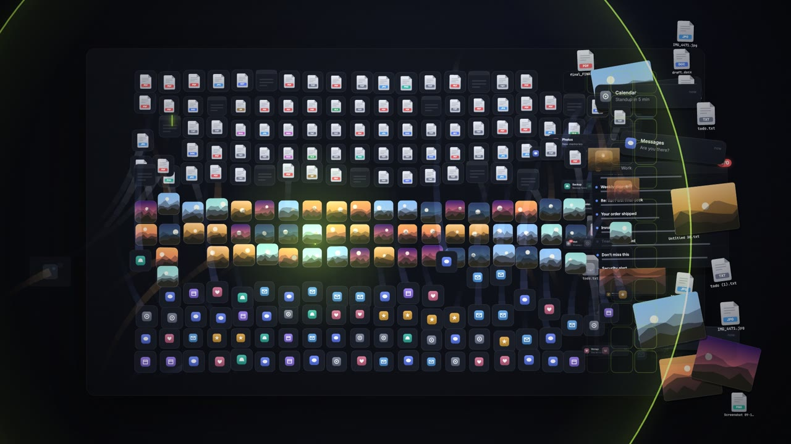
暗色科技发布
for Room to Think
Launch film for Tidy, a fictional app: one buried cursor snaps hundreds of windows back into place.
虚构 app Tidy 的发布片：被埋掉的光标一键把几百个窗口归位。
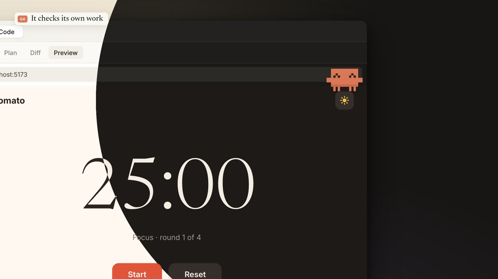
活体实机录屏
for Clawd Moves In
Clawd, the Claude Code pixel mascot, hops out of the terminal into the Claude app and acts out plan mode, diff comments and self-checks in a one-take screencast.
像素小人 Clawd 跳出终端、搬进 Claude 应用，在一镜到底的录屏里演示 Plan 模式、diff 评论和自检。
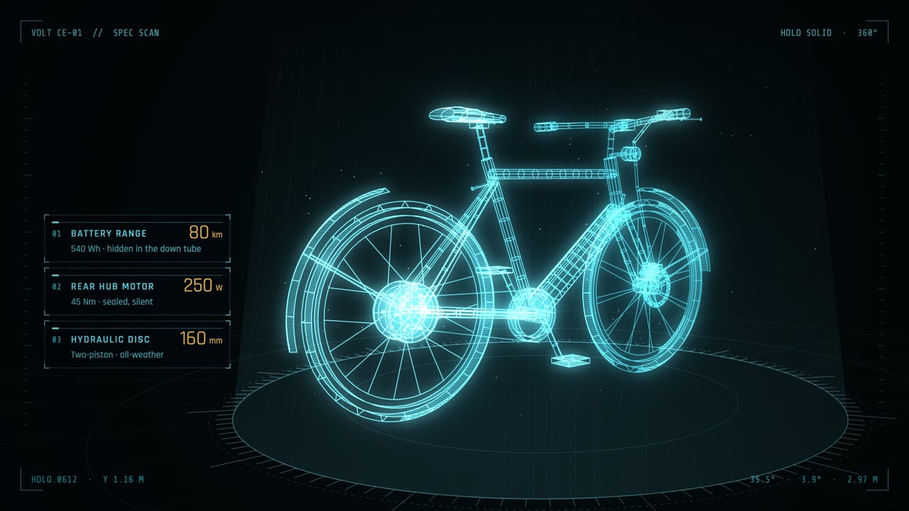
科幻全息界面
for Volt · Spec Scan
An e-bike is scanned into a hologram; target boxes lock onto the battery, motor and brakes, and each spec rolls into place.
一辆电助力车被扫描成全息线框，目标框依次锁定电池、电机、刹车，参数逐个滚到真值。
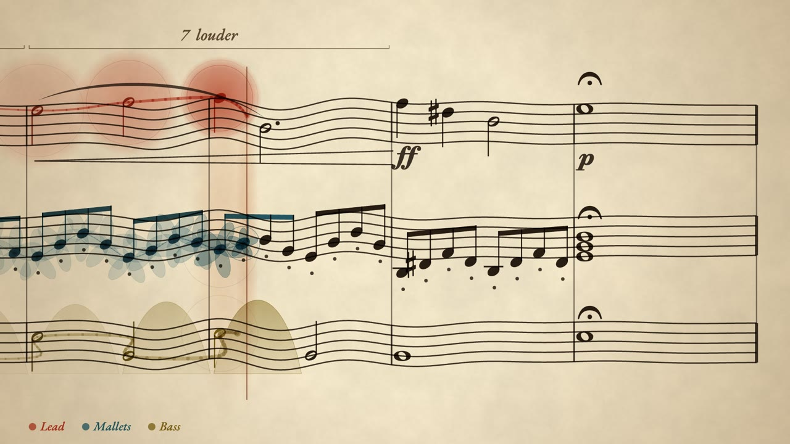
乐谱音乐可视化
for Four Notes
A four-note seed is repeated, mirrored and stretched on an engraved page, then the page unrolls into a landscape where the same score blooms, ripples and draws itself as ribbons.
四个音符的动机被重复、倒影、拉长；乐谱随后铺开成风景，同一份乐谱开花、起浪、画出旋律的丝带。
聊天记录体
for She Knows
A family group chat plans a surprise party, adds the birthday woman by mistake, recalls everything in a panic, and waits through her typing dots for a voice message that turns the secret around.
一个家庭群在筹备惊喜生日会，误把寿星拉进了群，大家慌忙撤回，对着她“正在输入…”的圆点干等，直到一条语音把秘密整个翻了过来。
弹幕体
for Day 3: I will not kill this starter
A first sourdough watched through a video player whose scrolling bullet comments are the narrator, the chorus and the joke-teller: doubt turns to coaching, the crowd falls asleep over the proof, a wall of reactions rises with the loaf, and a pause freezes the whole crowd in mid-air.
透过一个视频播放器看第一次做酸面包：滚动的弹幕同时是旁白、合唱和段子手。质疑变成指导，醒面时全场睡着，面包胀起时反应刷成一面墙，暂停让整屏弹幕悬在半空。
语言学习微课
for Three Little Words
An owl teacher turns in, on and at into a quiz game: a card slides up, a stopwatch ticks through the think pause, a one-line rule and a blue clue lead to the answer written in red, then the same cards turn up in German, Japanese and Spanish before the next question starts ticking.
一只猫头鹰老师把 in、on、at 变成小测验：卡片从底部滑上来，秒表在思考时间里滴答，一句口诀和蓝色线索引出红笔写下的答案，随后同样的卡片又在德语、日语、西班牙语里出现，最后下一题的秒表开始走动。
步骤说明书体
for Drip 1: Assembly Guide
An invented pour-over coffee stand built page by page: an exploded cover, a parts page with codes and quantities, five numbered steps where parts fly along dotted lines and snap in on the beat, zoom circles on the clicks, a person pictogram and a crossed-out mistake, then a held pause and the first drop into the carafe.
一座虚构的手冲咖啡架，按说明书一页页装起来：爆炸图封面、带编号和数量的零件页、五个编号步骤——零件沿虚线飞来、踩着拍点咔哒到位，圆形放大镜框框出「咔」的细节，还有小人图示和划掉的错误示范；最后一声静默，第一滴咖啡落进壶里。
代码讲解体
for One Character Short
A binary search says 16 is not in the list when it is; a pointer trace shows the loop quits with one candidate left, and a one-character diff (< becomes <=) fixes it, with every output taken from a real Python run.
一段二分查找明明有 16 却回答“没有”：指针逐步追踪发现循环在只剩一个候选时就退出了，改一个字符（< 变 <=）即修好，片中每个输出都来自真实的 Python 运行。
动态架构图体
for What Happens When You Open a Web Page
A dark architecture diagram that explains itself in step with the voice: one browser request travels through DNS, an edge node, a load balancer, an application server, a cache and a database, glowing each node it reaches, with cache hits and misses called out and a camera that dives into the machine room and pulls back out.
一张暗色架构图跟着讲解自己动起来：一次浏览器请求依次经过域名系统、边缘节点、负载均衡、应用服务器、缓存和数据库，走到哪个节点哪个就亮起来，缓存命中与未命中被标出来，镜头钻进机房再拉回全景。
论文解读体
for How to Read a Paper
A research paper on a dark desk is read aloud: the camera pushes into a sentence, a yellow marker sweeps it, a red pen rings the numbers, note cards slide in beside the page to say what each part claims, the page turns to a figure and a table where the one comparison is called out, and the film ends on a three-question checklist.
一篇论文摊在暗色桌面上被读出来：镜头推进到一句话，黄色荧光笔扫过，红笔圈出数字，批注卡片从页边滑入说明这一段在主张什么；翻页到图表，点出它只和一种基线比较；最后落在读论文的三个问题上。
实录解读
for One Button, Sorted Notes
A 30-second screen recording of an invented note app is broken down in 75 seconds: the clip plays untouched, then pauses on the frame that matters with a box, a zoom and a numbered callout, an amber-stamped drawing guesses how it works, and a closing table sets what the footage showed against what it never said.
一段虚构笔记应用的 30 秒操作录屏被拆成 75 秒的解读片：原片原速播放，再停在关键帧上加框、放大、编号批注；琥珀色印章的示意图猜它怎么运转；最后一张对照表列出演示里看到的与从没说的。
Category 06
卡通与动画 · 11 nominees
1930s 橡皮管卡通
for Coffee Cup Chase
A coffee cup chases a runaway sugar cube around the kitchen, 1930s-cartoon style.
一只咖啡杯满厨房追一块逃跑的方糖。
80 年代赛璐璐动画
for City Lights, 1987
A courier girl rides through a rain-soaked neon city to deliver a tape before the dawn launch.
快递少女骑车穿过雨后霓虹都市，赶在黎明发射前送到一盘磁带。
科幻情景喜剧卡通
for Coffee Run
A jaded genius opens a portal just to buy coffee and tumbles through ever-stranger universes.
厌世天才开传送门只想买杯咖啡，却穿过越来越离谱的平行宇宙。
50s 扁平卡通
for Meet Pip
A robot vacuum set up in three steps, told like a 1950s classroom film: place the dock, connect the app, press start.
用 50 年代教育片的口吻，三步教你装好一台扫地机：放充电座、连 app、按开始。
美漫分格波普
for Butter Side Down
A slice of toast slides off a 75 cm table, gets exactly half a spin, and lands butter side down: the physics of Murphy's law in a comic page that builds itself panel by panel.
一片吐司从 75 厘米高的桌边滑落，只来得及转半圈，黄油面朝下：墨菲定律背后的物理，用一页自己拼起来的美漫。
国风戏曲动画
for One Gong at Stone Gate
A young stage-warrior duels a stone spirit at a mountain gate, then opens the shut spring with one struck gong instead of her spear.
年轻的武旦与石精在山门对阵，最后没有出枪，只敲了一记锣，封住的泉水便涌了出来。
漫画黑白网点
for The Last Pineapple Bun
A girl and a middle-aged salaryman sprint for the last pineapple bun of the day, reach it in the same second, and split it: a black-and-white manga spread read right to left, panel by panel.
女孩和中年上班族为当天最后一个菠萝包冲刺，同一秒伸手，最后一人一半：一页从右往左、一格一格读下去的黑白漫画。
热血少年漫
for Round One: The Jar
A twelve-year-old cook fights the one enemy nobody in the kitchen has beaten, a sealed pickle jar, with every device of 1990s battle anime: face-off, charge, aura, floor cracks, a three-frame strike and an impact frame, and a result that is much smaller than the build-up.
十二岁的小厨师对上厨房里从没人打赢的对手，一罐封了三年的泡菜：对峙、蓄力、气场、地裂、三格出手加一帧冲击画面，而结果比铺垫小得多，只是一声“啵”。
航海冒险漫
for Five Hats and One Sock
A tiny captain who lost one sock draws a sea chart, pins up five wanted posters for his crew, sails through a storm to meet a giant hungry duck, digs up a treasure chest holding the wrong sock, and finally pulls back to find the whole ocean is a bathtub.
丢了一只袜子的小船长画好海图，给五位船员贴上悬赏通缉令，穿过风暴遇见一只饥饿的巨鸭，挖出的宝箱里却是另一只错的袜子，镜头拉远才发现整片大海原来是一只浴缸。
条漫竖滚体
for The Umbrella Says No
One episode of an invented webcomic on a single vertical strip: a commuter loses an argument with her stubborn umbrella through a slow walk, a whip-scroll chase down a staircase, a hard stop in a puddle and a tall silent gutter, until the rain stops and the umbrella turns out to have been a parasol all along.
一集原创条漫，整部作品是一条竖滚长卷：通勤的姑娘在和固执的雨伞争执中输了，慢速漫步、飞速下滚的楼梯追逐、泥坑里的急停、一段留白的长间隙之后雨停了，原来那把伞从头到尾是遮阳伞。
时代长卷
for The Birth of a Phone
A small courier carries one message along a single horizontal scroll, walking at an even pace through nine eras of how people send words, each world drawn in the visual language of its own period and revealed by a torn-paper edge, until the message arrives on a phone whose screen turns out to be the whole scroll.
一个小信使在一条横向长卷里匀速行走，带着一条口信穿过九个传信时代，每个世界都用当时的视觉语言来画，靠一道撕开的纸边换场，最后口信送到一部手机上，手机屏幕里装下的正是整条长卷。
Category 07
游戏 · 6 nominees
16-bit 像素 RPG
for The Last Save Point
At the final boss door a hero saves the game, and the save screen replays the whole journey.
勇士在最终 Boss 门前存档，存档画面闪回一路冒险。
HD-2D
for The Lampbearer
The lighthouse goes dark; a girl carries the last flame through a night forest and up the storm cliffs.
灯塔熄灭，孙女提着最后一簇火穿过夜林、爬上风暴悬崖。
微游戏快闪（瓦里奥制造式）
for Five-Second Astronaut
A clumsy cadet survives a five-second boot camp, faster and faster, until the boss: landing home.
见习宇航员闯五秒训练营，越来越快，Boss 关亲手降落回地球。
综艺节奏扁平
for Rhythm of AI, 1997 → 2026
The history of AI as a rhythm game: models take the stage on the beat, and a report card closes the show.
把 AI 发展史做成一局节奏游戏，模型踩着拍登场，最后发成绩单。
8-bit 红白机像素
for Dusklight
Wick the lamplighter races the dusk through two scrolling stages, climbs a beacon tower, lights it through a moth swarm that overloads the sprite hardware, and sets a new high score.
提灯人 Wick 在两段横版关卡里和黄昏赛跑，爬上灯塔，穿过让精灵硬件超载闪烁的飞蛾群点亮它，刷新最高分。
对战对比体
for Kettle Clash
Two invented kettles fight a four-round versus screen on price, boil time, keep-warm and capacity: a hard diagonal slash, a VS that slams in with shake and a colour split, life bars that lose a quarter per round, a frame-skip hit-stop on every impact, and a 3 to 1 tally that crowns a winner and still says who to pick if you sip slowly.
两把虚构电水壶打一场四回合的对战画面，比价格、烧水速度、保温和容量：一道硬斜线，带震屏和色散砸进来的 VS，每输一回合掉四分之一血条，每次命中都停几帧，最后 3 比 1 的战绩宣布赢家，也告诉慢慢喝茶的人该选谁。
Category 08
电影与时代 · 5 nominees
1920s 默片
for The Runaway Loaf
A baker's boy chases a runaway loaf downhill, then breaks it in half for a hungry girl.
面包店学徒追一个滚走的面包，最后掰成两半分给饿肚子的小女孩。
后室 / 新怪谈
for Night Shift Orientation
A new night-shift hire films their first night in an endless yellow office, following the rules on the wall.
新夜班员工拍下入职第一晚：无尽的黄色办公空间，和墙上的员工守则。
老胶片家庭录像
for Dad Was Here Too
A father films his family's 1976 seaside day without once appearing in it, until his daughter takes the camera and the reel burns out on him.
爸爸把 1976 年一家人的海边一天拍成一卷胶片，自己从没入镜；直到女儿接过摄影机，胶片在他身上烧尽。
前电影光学玩具
for Nothing Moves
A paper disc of twelve still bird drawings flies when it is spun past a slit and a mirror, flickers when too slow, flies backwards the other way, and crawls the wrong way under the film's own 24 fps shutter; the ring unrolls into a strip and bends into a drum where a gentleman walks.
一张画着十二只静止小鸟的纸盘，转起来透过狭缝在镜中飞翔；太慢就闪烁，反转就倒飞，在影片自己的 24 帧快门下盘面还会倒爬；画环展开成纸带，卷成转筒，里面走起一位绅士。
舞台灯光演出
for Second Sunrise
An invented band plays an invented instrumental to a dark stage: the lights wake one lamp at a time on a stick count-in, a blackout and a full-stage flash split the build from the drop, the break strips to one amber colour while an LED sun rises, and the finale ends on one spot.
一支虚构乐队在黑暗舞台上演奏一首虚构的器乐曲：灯光随鼓棒数拍一盏盏亮起，熄灯与全场闪光把铺垫和爆发隔开，间奏收成单一琥珀色、LED 屏上升起太阳，终章停在一束追光上。
Category 09
材质与 3D · 11 nominees
积木玩具
for Rocket from Spare Parts
A brick astronaut builds a rocket from spare parts and flies to a brick moon.
积木宇航员用零件拼出火箭，飞向积木月亮。
纸片立体书
for Pip's Paper Adventure
A pop-up book opens on a desk; a sprite named Pip adventures through paper worlds and jumps out into ours.
立体书在书桌上打开，小精灵 Pip 在纸片世界冒险，最后跳出书外。
移轴微缩
for Toy Town Rush Hour
Morning rush hour in a town that looks like a model: traffic, trains and tiny people.
玩具城的早高峰，一切都像模型。
低多边形等距
for The Island That Grew
An island and its village grow tile by tile from an empty sea, each tile a note, into a starry night.
空海里一格格长出小岛和村庄，每放一块响一个音符，直到星空。
玻璃质感产品
for Aura — Hear the Light
Unboxing and close-ups of Aura, fictional glass earbuds, in strip-light sweeps and caustics.
虚构玻璃耳机 Aura 的开箱与特写。
粘土定格动画
for Proof
A worried lump of dough on a hand-built kitchen counter waits all night to rise; at dawn a giant clay finger pokes it, and it springs back.
手捏小厨房里，一团忐忑的面团整夜不敢发酵；天亮时一根巨大的泥手指戳了它一下，它弹了回来。
折纸
for The Seventh Fold
A strip of paper is folded in half six times and the seventh will not close; the same strip is pleated, gathers into a wing, and opens with one pull.
一条纸带对折六次，第七次再也折不动；换成风琴褶，同一条纸带收成一排折页，一拉就展开。
发条机关
for The Slowest Link
A chain of brass links starts with a clock's tick; one 16:1 gear train makes everything after it wait, and swapping a single pair of gears gives the same chain back six seconds.
一串黄铜机关从钟摆的一声滴答开始；其中一组 16:1 的齿轮让后面的一切等着，只换一对齿轮，同一条链就快了六秒。
羊毛毡
for Mostly Air
A cloud of wool is poked four thousand times by a barbed needle into a firm ball, a head, a beak and two wings, blended into a rust breast, and given two bead eyes; the bird blinks and peeps in a real silence, and the lamp goes out.
一团蓬松的羊毛被毡针戳了四千下：缩成紧实的球，接上头、嘴和翅膀，铁锈色的胸口在针下融进羊毛，缝上两粒黑豆眼；静默之后，它眨了一下眼，轻轻叫了一声，台灯熄灭。
瓦楞纸手工
for The Wave Inside
A craft knife opens a board to show the wave between its liners; a thin card gives way under a tin, the same tin sits still on the board, and a flat-pack folded into a taped beam carries three.
美工刀划开瓦楞纸板，露出两层面纸之间的波浪；薄卡纸在铁罐下垮掉，同样的罐子在瓦楞板上纹丝不动，折成胶带封好的方梁后能扛三个。
产品英雄镜头
for Tide Flask
A single drop of condensation slides down a brushed-steel flask in macro; the studio light that reveals it travels over leather, glaze and the double wall, runs a whole day across the finished object, and lands on a price.
一滴冷凝水珠滑过拉丝钢水壶的微距镜头；照亮它的影棚光依次扫过皮革、釉面和双层壁，在成品上走完一整天，最后落在价格上。
And the Opuscar goes to…